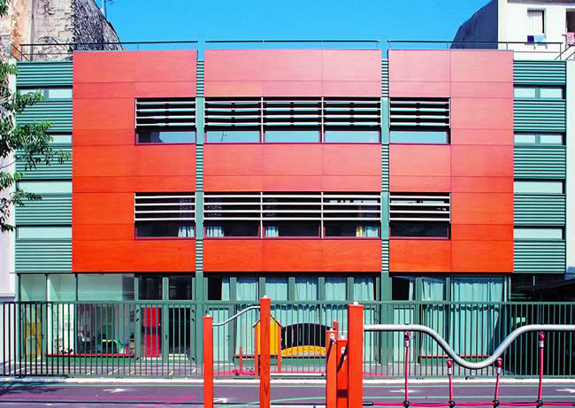

Nuestro centro de Educación Infantil acumula más de treinta y dos años de experiencia. Abrimos nuestra primera escuela infantil en el año 1983, y lo hicimos siendo pioneros en la apuesta por la conciliación de la vida familiar y el trabajo, al ofrecer un amplio horario (de 7:00 a 22:00 horas) para niños de edades comprendidas entre los tres meses y los tres años.
Nuestro espíritu pionero nos llevó a ser la primera escuela infantil que ofrecía el concepto de seguridad pasiva respecto de la estancia de los niños en nuestros centros. Para ello, trabajamos sobre la accesibilidad, implantamos los suelos anti-golpeo y la protección de las esquinas, eliminamos los elementos sobresalientes, instalamos la red eléctrica a metro y medio de altura, acolchamos las paredes, adaptamos los baños y un largo etcétera de actuaciones para convertirnos en referente de la seguridad pasiva. Muchas de nuestras iniciativas han ido por delante de la normativa exigible en cada momento y han servido de modelo a seguir en el sector de las escuelas infantiles.
Durante estos más de treinta años de experiencia, nuestra guardería ha ido incorporando novedosas técnicas educativas con un único objetivo: crear un ambiente afectivo y acogedor para el niño, que cubra sus necesidades físicas, intelectuales y afectivas. De esta manera contribuimos a estimular un desarrollo creativo y la libre manifestación de cada niño.